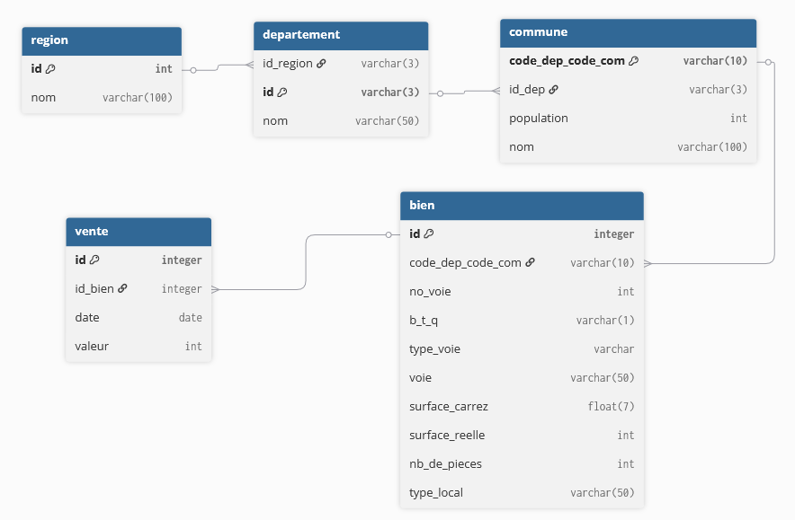

Base de données immobilière — DATAImmo (Laplace Immo)

De quoi s'agit-il ?
Mission réalisée pour Laplace Immo, réseau national d'agences immobilières, dans le cadre du projet stratégique interne "DATAImmo" piloté par la CTO. L'objectif : faire évoluer la base de données collectant les transactions immobilières et foncières françaises pour, à terme, construire un modèle de prévision des prix de vente et mieux accompagner les agences régionales. Ma mission couvrait deux volets : la conception d'un modèle de BDD (dictionnaire de données, schéma relationnel normalisé), son alimentation (charger les données dans la base créée) et rédiger les requêtes SQL d'analyse.
Sur quoi je me suis appuyé
- Sources : 3 jeux de données à intégrer — les Demandes de valeurs foncières (DVF, open data), le référentiel géographique français de data.gouv (régions, départements, communes), et les données de recensement de population de l'INSEE.
- Template de dictionnaire de données : Dictionnaire de données vide à compléter avec les informations spécifiques à chaque variable.
- Contraintes RGPD :Demande explicite d'identifier et supprimer les données personnelles sensibles.
- Un modèle relationnel initial Le modèle utilisé auparavant par Laplace Immo sans les données géographiques disponilbes pour le projet.
Comment j'ai procédé
- Élaboration d'un dictionnaire de données complet pour les 3 sources (DVF, référentiel géographique, données communes), avec pour chaque variable : code, signification, type, longueur, nature et règle de gestion — travail préalable indispensable avant toute modélisation.
- Conception du schéma relationnel normalisé en 3ᵉ forme normale (3NF), avec identification rigoureuse des clés primaires, clés étrangères et cardinalités pour chaque table (région, département, commune, bien, vente), en évitant les redondances (ex. entre département et code département).
- Nettoyage et mise en conformité RGPD des fichiers CSV avant import, vérification des doublons et des clés.
- Création des tables sur SQLite (solution locale) et import des données, avec vérification de l'intégrité par comparaison du nombre de lignes entre fichiers sources et tables importées.
- Rédaction de 12 requêtes SQL avec jointures multiples, agrégations et sous-requêtes pour répondre aux besoins d'analyse du marché immobilier, avec alias systématiques pour la lisibilité.
Ce que ça a produit
Base de données opérationnelle sur SQLite, avec un jeu de 12 requêtes SQL livrant des indicateurs directement exploitables par les agences.
Ces requêtes, conservées et rejouées en direct lors de la soutenance, donnent à Laplace Immo une base solide et interrogeable pour alimenter ses futurs travaux de modélisation prédictive des prix.
Ce que je ferais différemment
Le contrôle de la qualité des données (doublons, valeurs manquantes, conformité RGPD) a été fait de façon largement manuelle lors de cette mission. Une évolution naturelle serait d'automatiser ces vérifications via des scripts Python exécutés à chaque import — contrôle systématique des doublons, des valeurs aberrantes ou manquantes, et de la bonne suppression des données personnelles — plutôt que de les revérifier à la main à chaque nouvelle livraison de données. Cela sécuriserait le pipeline dans la durée, notamment si la fréquence d'alimentation de la base augmente au-delà d'un import ponctuel.